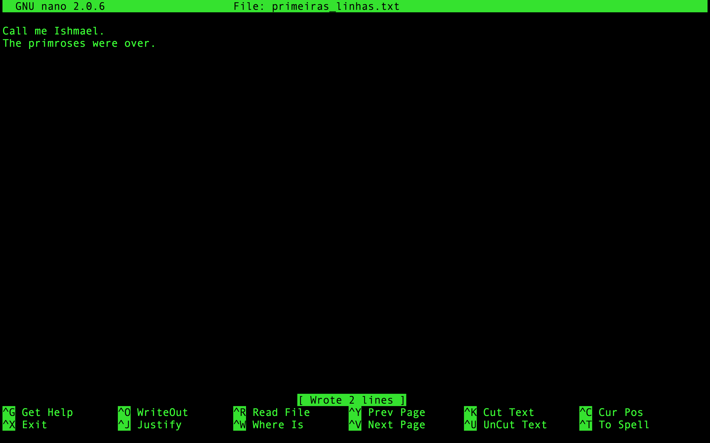

Introdução a linha de comando - UNIX
Observações:
- Este tutorial foi adaptado a partir do Livro The Biostars Handbook (Istvan Albert, 2022) e do Command-line Bootcamp por Keith Bradnam e está licenciado via Creative Commons Attribution 4.0 International License. O conteúdo original foi traduzido e modificado em parte de sua estrutura apenas para fins didáticos. A reprodução dele para qualquer outro fim não é permitida e nem consentida.
- O usuário de cada discente para acesso ao servidor tem restrições e o endereço IP de cada acesso é registrado. Muito cuidado ao usar.
Como acessar a linha de comando:
Opção recomendada para treino durante a disciplina: GoogleColab
As etapas abaixo e muitas outras podem ser realizadas utilizando o GoogleColab, no seguinte endereço:
O Notebook completamente executado pode ser verificado em:
Em sua máquina pessoal com Windows 10/11:
Há um bash (com um subsistema Ubuntu) apenas para o Windows 10 em diante (caso queira utilizar seu computador pessoal). Se quiser se aventurar, para habilitá-lo siga ESTES PASSOS ou procure no Google como proceder.
No caso de usar o subsistema acima, não é necessário o acesso a um servidor para treinar, apenas para verificar os arquivos pedidos.
Em Máquinas Linux/MacOS:
Em máquinas Linux e Mac, basta abrir o programa Terminal. Não é necessário o acesso a um servidor para treino.
Acessar Terminal via Web ou por Chromebooks:
Para treinos sem acesso a um servidor
Opção 1:
Para usar o terminal via web utilizaremos o COCALC. Ao acessar a página, clique no botão verde Run Terminal Now.
No Cocalc você poderá executar os comandos diretamente, sem necessidade de acesso ao servidor para treinar, apenas para verificar os arquivos pedidos.
Opção 2:
Para testar o terminal Linux vá no seguinte endereço
e clique em: Alpine Linux - Console
Ambas opções de terminal web podem apresentar algumas limitações na execução deste tutorial.
Primeiros passos no Terminal:
- Abra um terminal ou shell. Os exemplos abaixo podem variar de acordo com o tipo de shell que está sendo utilizada, mas os resultados serão os mesmos.
- Quando o terminal estiver aberto uma tela como a abaixo será vista:
Welcome to Ubuntu 20.04.4 LTS (GNU/Linux 5.4.0-107-generic x86_64)
* Documentation: https://help.ubuntu.com
* Management: https://landscape.canonical.com
* Support: https://ubuntu.com/advantage
System information as of Wed 06 Apr 2022 02:38:23 PM -03
System load: 0.06 Processes: 166
Usage of /: 16.5% of 18.32GB Users logged in: 1
Memory usage: 1% IPv4 address for eth0: 10.7.41.67
Swap usage: 0%
0 updates can be applied immediately.
Last login: Wed Apr 6 14:35:24 2022
johndoe@bioinfo:~$
A tela não é exatamente igual a esta, mas bem parecida.
- O primeiro passo que deve ser feito é criar um diretório
teste, usando o comando abaixo (o qual será detalhado depois):
mkdir teste
- Após criar o diretório, entre e faça o restante deste e do outro tutorial (102) dentro dele. Você entra neste diretório usando o seguinte comando:
cd teste
- Identifique o nome da máquina que estás trabalhando/acessando, e o nome do usuário.
- Observe o símbolo
$. Ele denota o fim do prompt de comando. Quando não há nada depois dele, significa que a máquina está pronta para próxima instrução. Nos exemplos abaixo o$não será colocado, para que os comandos possam ser copiados e colados. No entanto, recomendamos que os comandos sejam digitados para que você ganhe familiaridade e rapidez com eles. - Primeiro comando:
echo 'Hello World!'
- O resultado do comando deve ser algo parecido como:
mcb:~ bioinfo$ echo 'Hello World!'
Hello World!
Dica: Existirá situações onde trabalhar com múltiplos terminais ao mesmo tempo será extremamente útil.
Importante: O sistema UNIX é case sensitive, ou seja, ele diferencia letras maiúsculas de minúsculas em todos os seus comandos, nomes de arquivos e de diretórios.
- É importante ressaltar que você sempre estará dentro de um único diretório quando estiveres usando o terminal. O comportamento padrão é sempre quando abrires uma nova janela do terminal, você inicia no seu próprio diretório home (que você pode modificar nativamente).
- Para verificar os arquivos e diretórios que estão em diretório home usaremos o seguinte comando:
ls
- Ele dará o seguinte resultado (e claro, depende do computador que utilizas):
Applications Desktop Documents Downloads
- A saída do comando
lsmostra diretórios e arquivos. Os diretórios que estão aparecendo estarão de acordo com o conteúdo deste tutorial. - Após o comando
ls, um novo prompt de comando $ aparecerá, mostrando que a máquina está pronta para receber o próximo comando. - Embora você sempre esteja em um único diretório, o comando
lsé utilizado para listar o conteúdo de qualquer diretório presente na máquina. Tente o comando a seguir:
ls /bin
- Isto irá mostrar na tela (o que chamamos de print) vários nomes de programas, entre eles:
bash pwd mv
- No início, olhar os diretórios a partir de um terminal Unix pode ser confuso. Mas estes são os exatos tipos de pastas que você ver quando utiliza qualquer explorador de arquivos em interfaces gráficas. A partir do nível root (
/) existem inúmeros diretórios, assim você tratá-lo como qualquer outro diretório, com o seguinte comando:
ls /
o que retornará algo como:
bin dev initrd.img lib64 mnt root software tmp vmlinuz
boot etc initrd.img.old lost+found opt run srv usr vmlinuz.old
data home lib media proc sbin sys var
- A saída pode ser observada em cores diferentes, que diferenciam os nomes. Muitos sistemas Unix (o Ubuntu, por exemplo) irá mostrar arquivos e diretórios com cores diferenciadas. Lembre-se que ao logar em computador, você sempre estará em seu diretório, que estará dentro de outro home ou Users.
- Como podem existir centenas de diretórios em qualquer máquina Unix e que sempre estarás em um diretório, você frequentemente precisará se localizar. Isto é realizado com o seguinte comando:
pwd
que irá mostrar:
/home/nome_usuario
- Você logou como o usuário 'bioinfo', portanto seu diretório será um subdiretório do diretório home. Este por sua vez será o diretório Pai (parental) do bioinfo. Os diretórios e subdiretórios são sempre separados por /. Quando há apenas a / inicial, significa que estás no diretório raiz (root directory).
- Este comando é um dos que você irá mais utilizar, principalmente quando estiveres trabalhando apenas em terminal. Frequentemente os comandos digitados não dão certo porque foram executados no diretório errado. Assim, utilize o
pwdsempre.
Quick Question: Existem outros usuários nesta máquina? Utilize um dos comandos acima para obter sua resposta.
Manipulando, navegando e modificando
- Vamos agora criar um diretório, utilizando o seguinte comando e depois verificando com o
ls:
mkdir aulas
ls
deverá aparecer o seguinte:
aulas
- Vamos criar um outro diretório:
mkdir tmp
ls
- Você está no diretório do seu usuário, mas irá agora ter de trabalhar no diretório recentemente criado
/aulas. Para mudar os diretórios no Unix, use o seguinte comando:
cd aulas
Em seguida, verifique com o comando pwd se estás realmente no diretório desejado:
pwd
o que deverá mostrar:
/home/bionfo/aulas
O nome 'bioinfo' estará substituído pelo nome do seu usuário
- Vamos criar mais dois subdiretórios dentro de 'aulas':
mkdir tutoriais
mkdir dados
- Existem duas outras formas de fazer isto. Uma dentro do próprio diretório:
mkdir tutoriais dados
- A outra seria no diretório do usuário, na 'home', utilizando a opção de comando -p:
mkdir -p ~/aulas/dados
Note os espaços antes e depois da opção '-p'.
- Para voltar a um diretório parental, utilize o seguinte comando:
cd ..
Note o espaço entre o 'cd' e '..'
Se você pretende navegar dois níveis de diretórios de uma só vez, use o comando:
cd ../..
- Use os comandos
cdepwdpara navegar entre eles. - Vamos mudar para o diretório raiz (root) e retornar ao diretório de trabalho:
cd /
cd /home
cd /bioinfo
Aqui novamente, também poderíamos ir diretamente, com apenas um único comando:
cd /home/bioinfo
- Neste caso, o posicionamento da / é crucial. Veja os dois exemplos abaixo de comandos (não os execute):
cd /step1/step2
cd step1/step2/
O primeiro comando é um caminho absoluto. Ele instrui a máquina a ir para o diretório raiz (/), depois ir ao diretório step1 e depois ao diretório step2 que está dentro de step1. Neste caso apenas um único diretório /step1/step2 poderá existir nesta máquina. O segundo comando especifica um caminho relativo. Ele instrui a máquina que a partir da localização atual, ele vá ao diretório step1 e depois ao diretório step2. Podem existir outros diretórios step1/step2 mas dentro de outros diretórios.
-
O uso do comando
cd ..nos permite mudar diretórios relativos aonde estamos no momento. Você pode ser mudar para um diretório baseado na localização absoluta. -
Quando você está no seu diretório home, ao invés do nome do diretório antes do $, teremos o caractere
~. Isto por o Unix utiliza ~ como um forma curta de representar a home do usuário. Veja o que acontece quando você usa os seguintes comandos (use o comandopwdapós cada um deles para confirmar os resultados):
cd /
cd ~
cd
- Você perceberá que
cdecd ~fazem a mesma coisa: ambos te levam para o seu diretório home, de onde quer que estejas na estrutura da máquina. Utilizandocdé uma maneira rápida de chegar lá. - Você também pode utilizar o caractere ~ como uma maneira rápida de navegar nos subdiretórios da sua home, quando estiveres em qualquer outro:
cd ~/aulas/dados
- Se você está trabalhando no diretório
~/aulas/dadose quer ir para o diretório~/bioinfo/tmpvocê poder fazer qualquer um dos comandos a seguir:
cd
cd tmp
pwd
ou
cd ../../tmp
pwd
nos dois, a saída deve ser a mesma:
/home/bioinfo/tmp
- O operador
..também pode ser utilizado com o comandols, ou seja, você também pode listar o conteúdo de diretórios acima do atual:
cd ~/aulas/tutoriais
ls ../../
- Ainda utilizando o ls, uma outra linha de comando é extremamente útil:
-l:
ls -l ~
Dependendo do sistema, terás algo como o abaixo:
drwxr-xr-x@ 21 jpmatos staff 714 18 Fev 11:04 Bioinfo
drwxr-xr-x@ 4 jpmatos staff 136 15 Fev 14:42 Desktop
drwxr-xr-x@ 8 jpmatos staff 272 9 Fev 15:43 Documents
drwx------+ 11 jpmatos staff 374 17 Fev 13:53 Downloads
drwxr-xr-x@ 14 jpmatos staff 476 22 Nov 22:41 Genoma
-rw-r--r--@ 1 jpmatos staff 168258 31 Jan 11:04 IMG_1346.jpg
-rw-r--r--@ 1 jpmatos staff 581920 31 Jan 11:02 IMG_1347.png
drwx------@ 72 jpmatos staff 2448 2 Fev 10:59 Library
drwxr-xr-x+ 5 jpmatos staff 170 10 Nov 18:51 Public
Para cada arquivo ou diretório teremos mais informações. O 'd' no início das linhas indica um diretório. O resto das letras serão as permissões de cada diretório ou arquivo. Existem outras opções para o comando ls. Teste cada uma e observe as diferenças:
ls -l
ls -R
ls -l -t -r
ls -lh
Note que o último utilizou múltiplas opções sob um único traço (-).
- Como sabemos as opções existentes em cada comando? Felizmente cada comando Unix tem um manual, que é facilmente acessado utilizando o seguinte comando:
man ls
man cd
man man
Sim, até o comando man tem uma página de manual!
Quando utilizando o comando man, pressione espaço para descer uma página, b para ir para a página anterior e q para sair. Você também pode usar as setas direcionais para ir vendo linha a linha. O comando man na verdade usa um outro programa Unix, um visualizador de texto chamado less.
- Agora você vários diretórios vazios, que precisam ser removidos. Para fazer isto, utilizamos o comando
rmdir. Ele apenas removerá diretórios vazios, portanto sua utilização é segura.
cd ~/aulas
ls
rmdir tutoriais
ls
rmdir dados
ls
Importante: Você tem de estar fora do diretório antes de removê-lo.
- O Unix possui um recurso de autocompletar nativo, utilizando a tecla
tab. É digitar as primeiras letras de diretórios ou arquivos e apertartab, que o Unix completa o resto. Isto é muito útil para salvar tempo. Se apertartabnão der resposta, significa que você não digitou letras únicas diferentes para ocorrer o autocomplete. Neste caso, você aperta atabduas vezes e todas as opções são mostradas! Isso salva bastante tempo e digitação! - Uma outra "santa" característica é que o Unix salva todos os comandos que você digitou em cada sessão de login. Você pode acessar esta lista utilizando o comando
historyou utilizando as setas para baixo ou para cima para navegar entre os mais recentes.
Trabalhando com arquivos
A partir de agora, trabalharemos com comandos de Unix que estão diretamente relacionados ao trabalho com arquivos. Antes disso, teremos de criar alguns arquivos. O comando touch nos permitirá criar arquivos novos, vazios (ele faz outras coisas também, mas por enquanto só precisamos de arquivos).
cd aulas
touch jedi.txt
touch federal.txt
ls
Você verificará então os dois arquivos.
- Agora vamos assumir que nós queremos mover estes arquivos para um novo diretório, temp. Vamos agora utilizar o comando
mv(não esqueça de utilizartabpara completar daqui por diante):
mkdir temp
mv jedi.txt temp
mv federal.txt temp
ls temp
Para o comando mv sempre temos de especificar um arquivo ou diretório fonte (source) que nós queremos mover, e daí especificar o local alvo, a localização destino. Poderíamos ter movido ambos arquivos de uma única vez, utilizando algum dos comandos abaixo:
mv *.txt temp
mv *t temp
mv *ed* temp
O * é um coringa, que significa qualquer padrão que tenha. O caractere ? é um outro coringa, com um significado um pouquinho diferente. Veja o que ele significa.
- O comando
mvpode também renomear arquivos. Faça o exemplo abaixo:
touch samurai
ls
mv samurai temp/ninja
ls temp/
Tendo como resultado:
jedi.txt federal.txt ninja
A extensão lógica disto é que você também pode utilizar o comando mv para renomear um arquivo sem movê-lo. Para renomear você também pode utilizar o comando rename (veja em seu manual as opções dele).
- É importante que você entenda que desde que você descreva em um comando um diretório origem e um destino quando moves um arquivo, então não importa em qual diretório estás. Mover diretórios é semelhante a mover arquivos:
mv temp temp2
ls temp2
- Remover diretórios que possuem arquivos é uma etapa que deve ser realizada com extremo cuidado. Isto porque não há volta em muitos casos. O comando
rmé extremamente perigoso exatamente por isso. Você pode deletar tudo com este comando, inclusive o diretório home.
Leia com atenção o uso do comando
rmpara evitar muita morte e destruição do mundo como conhecemos.
- Felizmente existe uma maneira de deixar o comando
rmum pouco mais seguro: usando a opção-i, que irá pedir confirmação antes da execução. Se habitue a usar sempre orm -i.
cd temp
ls
rm -i jedi.txt federal.txt ninja
o que irá perguntar em cada etapa, que você confirma pressionando y:
rm: remove regular empty file 'jedi.txt'? y
rm: remove regular empty file 'federal.txt'? y
rm: remove regular empty file 'ninja'? y”
Esse comando também poderia ter sido simplificado utilizando alguns dos coringas acima aprendidos ou mais complexo apagando cada arquivo com um comando diferente.
- O comando
cpé utilizado para cópias de arquivos e diretórios e tem uma sintaxe similar a do comandomv, no entanto ele deixa o arquivo na origem. Vamos criar um novo arquivo e então fazer uma cópia:
touch file1
cp file1 file2
ls
E para copiar um arquivo em um diretório diferente:
touch ~/aulas/file3
cp ~/aulas/file3 ~/aulas/tutoriais/
Para cópias de diretórios, o comando cp é utilizado com as opções -R ou -r. Verifique no man cp a diferença entre elas.
Visualizado e editando o conteúdo de arquivos
Dois comandos úteis para visualizar o conteúdo dos arquivos são: more ou less. Eles não editam o conteúdo. Utilizaremos o primeiro comando que aprendemos, o echo para colocar texto em um arquivo e depois visualizar:
echo "Call me Ishmael."
Call me Ishmael.
echo "Call me Ishmael." > primeira_linha.txt
ls
dando:
primeira_linha.txt
O caractere > quando inserido ao final de um comando redireciona o print daquele comando para um arquivo. Neste caso, estamos colocando o resultado do comando echo para um arquivo primeira_linha.txt.
Tome bastante cuidado ao utilizar o redirecionamento com
>: ele irá apagar qualquer arquivo que já exista com o nome que foi utilizado.
Podemos agora ver o conteúdo do arquivo:
more primeira_linha.txt
Ao utilizar more ou less, você pode acessar uma página de comandos de ajuda, pressionando h, passar uma página usando espaço, navegar linha a linha usando j ou k, b para ir para a página anterior e q para sair. Estes comandos também realizam um milhão de outras coisas, incluindo procura em texto, mas veremos isso depois.
O comando cat é um dos comandos mais utilizados quando estamos trabalhando com textos e caracteres no terminal. Vamos a uma pequena demonstração, adicionando um nova linha ao arquivo anterior:
echo "The primroses were over." >> primeira_linha.txt
cat primeira_linha.txt”
O resultado é:
Call me Ishmael.
The primroses were over.
Preste bem atenção que agora o que foi utilizado foi >> e não apenas >. Este operador adiciona a um arquivo. Se > tivesse sido usado, o arquivo primeira_linha.txt teria sido sobrescrito.
O comando cat ele apenas mostrar o conteúdo de um arquivo e o retorna para a linha de comando. Diferentemente do less você não tem nenhum controle na visualização. Você pode utilizar cat para rapidamente combinar múltiplos arquivos ou até mesmo copiar um:
cat primeira_linha.txt > primeira_linha_copia.txt
Muitas vezes precisamos de informações sobre um arquivo sem ter de visualizá-lo com more ou less. Um exemplo disto é quando precisamos contar caracteres em um arquivo. Para isso, um comando muito utilizado é o wc (word count):
wc primeira_linha.txt
2 7 42 primeira_linha.txt
$ wc -l primeira_linha.txt
2 primeira_linha.txt
Este comando retorna o número de linhas, palavras e caracteres em um arquivo específico e você pode usar opções de linha de comando para ver apenas uma destas estatísticas (caso do wc -l).
Quick Question: Pense numa aplicação do comando wc ao utilizar arquivos de sequências biológicas na interface de linha de comando.
O editor nano
A maioria dos sistemas Unix vem com um editor de texto extremamente leve, chamado nano. Existem editores mais potentes e com mais recursos (como o emacs e o vi), mas eles têm curvas de aprendizagem mais complicadas. O nano é muito simples. Você pode editar ou criar arquivos digitando:
nano primeiras_linhas.txt
Você deverá ver algo como:

Na parte de baixo da tela há uma série de comandos simples que são acessíveis digitando a tecla Control (indicada como ^) mais uma letra.
O comando grep
Utilize o nano para criar um arquivo chamado texto_teste.txt, que irá conter as seguintes linhas (não precisa digitar, você pode copiar e colar):
É um período de guerra civil. Partindo de uma base secreta, naves rebeldes atacam e conquistam sua primeira vitória contra o perverso Império Galáctico.
Durante a batalha, espiões rebeldes conseguem roubar os planos secretos da arma decisiva do Império, a ESTRELA DA MORTE, uma
estação espacial blindada com poder suficiente para destruir um planeta inteiro.
Perseguida pelos sinistros agentes do Império, a princesa Leia, apressa-se em voltar para casa a bordo de sua nave estelar, protegendo os planos roubados que podem salvar seu povo e
restaurar a liberdade na galáxia....
Trabalhando na linha de comando, em várias ocasiões você terá de procurar padrões dentro de arquivos. Um exemplo em bioinformática é a procura do número de sequências em um determinado arquivo fasta (veremos mais adiante) ou o número de ATG (que é o códon de iniciação) em uma determinada sequência. O comando Unix grep faz isso (e muito, muito mais). Os exemplos a seguir mostram como você pode usar as opções de linha de comando do grep para:
- Mostrar linhas que possuem um determinado padrão.
- Ignorar maiúsculas e minúsculas quando procurar (
-i) - Apenas procurar palavras inteiras (
-w). - Mostrar as linhas que NÃO possuem um padrão (
-v). - Utilizar coringas e outros padrões para permitir alternativas (
*,.e[]). Vamos lá:
Linhas que contém a palavra 'planos':
$ grep planos texto_teste.txt
Ressaltar a palavra encontrada:
$ grep --color=AUTO planos texto_teste.txt
Mostrar as linhas que não possuem o padrão 'planos':
$ grep -v planos texto_teste.txt
Combinando comandos com pipes
Uma das características maios poderosas do Unix é que você pode mandar a saída de um programa para outro comando (desde que o outro programa aceite), utilizando algo conhecido como pipe. Isto é implementado utilizando o caractere "|". É como conectar dois programas. Vejamos alguns exemplos:
grep planos texto_teste.txt | wc -c
310
Lembra do comando history? Você pode procurar entre os comandos que você digitou utilizando um pipe com o grep:
history | grep mkdir
Com o comando acima você extraiu do histórico dos seus comandos apenas as linhas que tinham o comando mkdir.
Outros comandos úteis
- Vamos trabalhar com um arquivo fasta de sequências de nucleotídeos. Este arquivo está alocado em um outro servidor, iremos fazer a cópia do arquivo remotamente, utilizando o comando
wget. Coloque o arquivo em um diretório de trabalho~/aulas:
cd /home/bioinfo/aulas ou cd ~/aulas
- Agora executaremos o
wget:
wget 'https://drive.google.com/uc?export=download&id=15OCaUzNHqp2hD6sfAnQPxebBclr6tQTS' -O teste.fasta
- Agora vamos conhecer alguns outros comandos úteis, utilizando pipes de diferentes comandos. Vamos ver as últimas 10 linhas de um arquivo, fazendo um pipe de dois comandos, o
taile ohead.
tail -n 20 teste.fasta | head
O primeiro, com a opção -n 20 dá as últimas 20 linhas do arquivo, e fazendo o 'pipe' com o head irá mostrar as primeiras 10 linhas das últimas 20.
- Mostrar as linhas do arquivo que começam com um códon de iniciação ATG:
grep "^ATG" teste.fasta
Neste caso, o caractere ^ procura padrões no início de uma linha.
- Agora vamos contar quantas linhas em um arquivo contêm as trincas 'CAT' ou 'GAT':
grep -c '[CG]AT' teste.fasta
A opção -c do comando grep conta o número de linhas. A descrição '[CG]' denota a expressão regular para procura.
- Transformar letras minúsculas em maiúsculas no arquivo
min.fasta, utilizando o comandotr: - Verifique primeiro como está o arquivo com o comando
more:
more min.fasta
- Agora utilize a combinação dos comandos
catetr:
cat min.fasta | tr 'a-z' 'A-Z'
- Mudar todas as ocorrências de 'Chr1' para 'Chromosome 1' e escrever o output para um novo arquivo, utilizando o comando
sed:
cat arquivoexemplo1.txt | sed 's/Chr1/Chromosome 1/' > arquivoexemplo2.txt
A variável de ambiente $PATH
Um outro uso do comando echo é mostrar o conteúdo das variáveis de ambientes (environment variables). Estas contêm valores específicos dos usuários ou do sistema que, ou refletem informações ou lista localizações úteis. no sistema de arquivos. Alguns exemplos:
$ echo $USER
bioinfo
$ echo $HOME
/home/bioinfo
$ echo $PATH
/usr/local/sbin:/usr/local/bin:/home/bioinfo/bin”
A última mostra o conteúdo da variável de ambiente $PATH, que mostrar a lista de diretórios onde se espera que estejam os programas que você irá executar (os executáveis). Isto inclui todos os comandos de Unix utilizados até agora. Conhecer como mudar o seu $PATH para incluir diretórios customizados é necessário muitas vezes (por exemplo, quando for necessário instalar uma nova ferramenta de bioinformática em uma localização não-padrão).